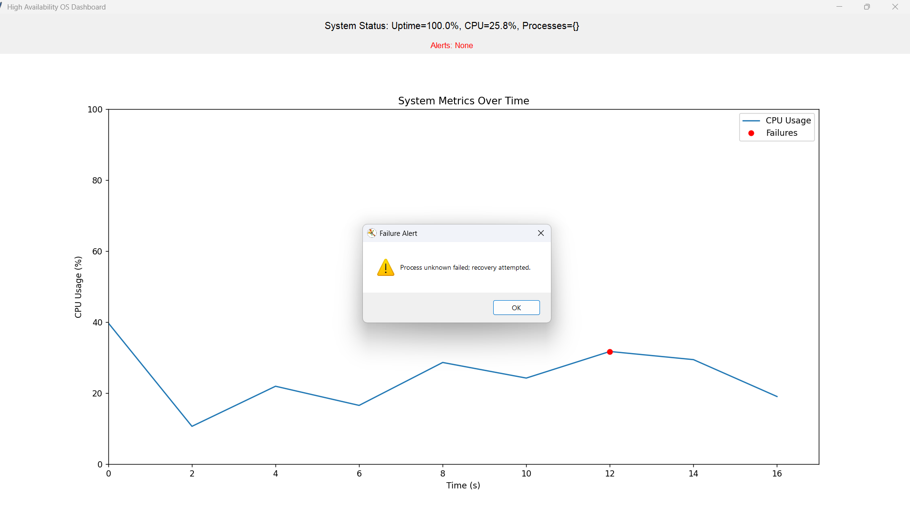

This project simulates a high-availability operating system designed for critical applications—like hospital heart monitors or flight control systems—where failure isn’t an option. Built with Python, it ensures processes keep running by detecting failures and recovering automatically.
Follow these steps to start the system from this webpage:
cd C:\Users\neera\OneDrive\Desktop\New folder\osproject\src python main.py
You’ll see: * Running on http://127.0.0.1:5000. Keep it running.
Status: Waiting to start (ensure the server is running at http://127.0.0.1:5000)...
Alternatively, in a terminal:
src/:
cd C:\Users\neera\OneDrive\Desktop\New folder\osproject\src
python start_system.py
Ctrl+C or close the GUI.Here’s what you’ll see when you run it:
Process for HeartMonitor started with PID 10792
Backup process for HeartMonitor started with PID 21720
Starting system monitoring...
Starting HeartMonitor...
HeartMonitor is running...
Starting HeartMonitor_Backup...
HeartMonitor_Backup is running...
Simulating delay for HeartMonitor...
Timeout detected: HeartMonitor hasn’t responded in 5 seconds.
Logged: 2025-03-25 14:03:15 - Process 'HeartMonitor' failed: Timeout or crash detected
Switching to backup for HeartMonitor...
Recovery successful: Backup activated.
FAILURE DETECTED: Handling simulated failure...
Logged: 2025-03-25 14:03:16 - Process 'HeartMonitor' failed: Simulated failure
[On Ctrl+C:]
Caught Ctrl+C, shutting down...
HeartMonitor shutting down gracefully...
HeartMonitor_Backup shutting down gracefully...
GUI: Shows uptime, CPU usage, process status, and alerts. See the screenshot below.
